U Orbit
A bold U with an offset orbit for platform energy, tenant motion, and a sharper future-facing silhouette.
Six distinct vector concepts built around the letter U: digital, modular, signal-led, and cafe-adjacent without becoming a generic coffee cup.

A bold U with an offset orbit for platform energy, tenant motion, and a sharper future-facing silhouette.

Rounded modular blocks make the U feel like a product icon: compact, scalable, and friendly enough for cafe owners.

Nested U strokes suggest data flow, reservations, and menu updates moving through one clean operating system.

A dot-matrix U with a softer bottom curve, built for digital networks and multi-tenant structure.

A strong U frame crossed by a subtle espresso-steam signal, blending coffee culture with a modern tech read.
Connected endpoints turn the U into a small tenant network: cafes, branches, menus, and guests in one loop.